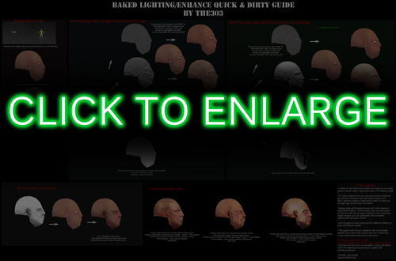

Ive been researching and wanting to put together a guide on many of the old methods of texturing that was common from the late 90s to early 2000s before special shaders and maps. I will list links and resources as well as my commentary on various methods. Ill begin with the old style:
Tripwire thread on various recovered mini-tutorials: https://forums.tripwireinteractive.com/index.php?threads/texturing-tutorial-thread.55519/ (also includes Millenia's video texture playlist at bottom of post)
"Enin" site for mini-tutorials (most is dead but here is the working archives):
Metal & Spring:
https://web.archive.org/web/20080216055541/http://st.burst.cc:80/tut_enin1.htm
Wood Stock:
https://web.archive.org/web/20080215110220/http://st.burst.cc:80/tut_enin3.htm
Basic metal:
https://web.archive.org/web/20071221022901/http://st.burst.cc:80/tut_wanna.htm
Plastic:
https://web.archive.org/web/20080216055552/http://st.burst.cc:80/tut_exess2.htm
Metals:
https://web.archive.org/web/20071221022821/http://st.burst.cc:80/tut_exess1.htm
Photoshop Brush set:
https://web.archive.org/web/20040607040331/http://st.gaming-interactive.com:80/brushes/photoshopbrushes1.rar
Tutorial Shack Gun Texturing PDF site dump backup:
https://web.archive.org/web/20050909192652/http://st.burst.cc:80/Tutshack.pdf
Fox-Mike Gun Texturing PDF site dump backup:
https://web.archive.org/web/20040407000001/http://st.gaming-interactive.com:80/MikesSkinningTuts.pdf
Stylized Texture painting of a character step-by-step. Uses "Overlay" method of painting light style (Archive Link)
https://web.archive.org/web/20100819100733/http://www.michaeldashow.com:80/tips_texturepainting.html
Face texture painting method video by Ben Mathis:
https://www.youtube.com/watch?v=1QKXpaRiTYs
Character painting method by Ben Mathis (iirc this was originally from 2004ish):
Part1: https://www.youtube.com/watch?v=IvLzk8JrEFs
Part2: https://www.youtube.com/watch?v=lwshiFsq9ec
Face texture painting method (Orc face)
http://www.horribledeath.com/orc_wip.htm
Lowpoly Character texture painting
https://hulub.ch/3dmodels.php
Rust & Metal painting workflow:
https://www.3dtotal.com/tutorial/658-texturing-metal-part-1-making-the-general-surface-photoshop-by-johny-texture-rust-screw
Painting a tank with welds & mud tutorial:
http://www.jamesodonnell.info/dingo_tut/index.html
(mirror)http://forgottenhope.warumdarum.de/tutorials/skinningdingo.php
Photo-texture/painting hybrid method; this style was used a lot in HL2beta (skip to page 66):
https://orig09.deviantart.net/5ef4/f/2007/122/0/4/3d_tutorial___lowpoly_characte_by_athey.pdf
Texturing a Glock VIDEO series (2007 complete tutorial)
http://www.moddb.com/tutorials/creating-a-weapon-for-source-part-2
I *highly* recommend this one since it is probably the most complete on the "old style" methods.
Youtube Mirror (video only, no working files)
New(er) Methods:
A newer method of painting is done in a hybrid method of painting on the texture as well as within the active 3d viewport, also known as "Viewport Canvas" or some other variarion:
Viewport canvas painting method of a stylized gun:
https://www.youtube.com/watch?v=vMg9S5j5bHY
Viewport canvas painting method of a stylized character:
Part1: https://www.youtube.com/watch?v=6VNMLauOUpU
Part2: https://www.youtube.com/watch?v=LLNw4onM_YE
Part3: https://www.youtube.com/watch?v=kM82kaPHAK4
Viewport canvas painting method of a monster character:
https://www.youtube.com/watch?v=2Yr-Pgw3pMw
Blender Viewport Painting of a Lowpoly character:
https://www.youtube.com/watch?v=moFnbJSaES0 Example1
https://www.youtube.com/watch?v=Dqb8_88N7yI Example2
DOTA2 "Light Bake" texture method:
https://support.steampowered.com/kb/8700-SJKN-4322/dota-2-character-texture-guide
You can use modern highpoly to lowpoly workflow methods to bake out a "Complete Map" which is a render to texture of your model so all the light and bump/specular/gloss/normalmap is "baked in" to the diffuse. To do this you set up all your materials, create an array of scene lights above your model then use "Render-To-Texture" to bake out the complete map or do it in separate passes for more control. I have made a quick and dirty guide about doing fine tuning and control with baked maps:  My "SkelePuncher" model was a highpoly-to lowpoly render bake using these methods ( https://forums.svencoop.com/showthread.php/44599-SC-5-x-Skelepuncher?p=526924 )
An important thing to note when making Cartoony ,Stylized or Anime models is that you may want to consider using either the reduced shadows flag (QC code $flags 256 ) or even use the Sven special texture mode $flatshade which discards shadows and lights the whole texture uniformly. This is best for Anime or painted shadows textures that would normally suffer under vertex shadows. An example of lighting differences here:
Lastly, don't forget Color Remapping as well
For everything else see the Model Workflow Mega Tutorial.
{kind=link}